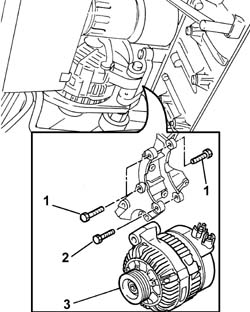
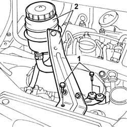
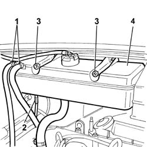
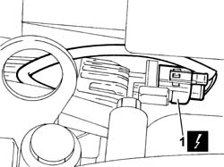
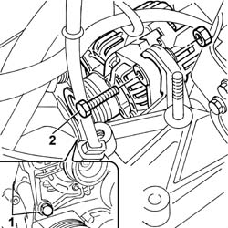

5530A10 ALTERNATOR - R+R
- Path
- Procedures > 55 ELECTRICAL EQUIPMENT > 5530 CURRENT GENERATOR > 5530A ALTERNATOR AND COMPONENTS > 5530A10 ALTERNATOR - R+R
- Kind
- repair procedure (removal / refitting; the operation number is the code)
- Applies to
- engines: 2.0 16V, 2.0 JTD 8V, 2.3 JTD 16V; all production periods
- Interactive page
- https://sloeber94.github.io/elrnDB-fDct/en/#/244001359
Applies to: engines: 2.0 16V; all production periods
 Removing
Removing
 Refitting
Refitting- Disconnect the negative battery terminal.
Op. 1092B40 AIR CONDITIONER COMPRESSOR/ALTERNATOR DRIVE BELT - R + R
See in Op. 1092G15
See in Op. 1092G20
1. Remove the plastic protectors.
2. Undo the retaining nuts.
3. Disconnect the electrical connections.
 | Description | Connector |
|---|---|---|
3 | Alternator | A010A |
| Description | Connector |
|---|---|---|
3 | Alternator | A010B |
4. Unscrew the reaction bracket retaining bolt.
5. Undo retaining bolts (5a) and remove alternator (5b).

Applies to: engines: 2.0 16V; all production periods
Refitting
Removing- Position the alternator and tighten the retaining bolts.
- Tighten the reaction bracket retaining nut.
- Position the leads and tighten the retaining nuts.
| Description | Connector |
|---|---|---|
. | Alternator | A010A |
| Description | Connector |
|---|---|---|
. | Alternator | A010B |
See in Op. 1092G20
See in Op. 1092G15
Op. 1092B40 AIR CONDITIONER COMPRESSOR/ALTERNATOR DRIVE BELT - R + R
- Connect the negative battery terminal.
Applies to: engines: 2.0 JTD 8V; all production periods
Removing
RefittingOp. 7055B54 UNDER-ENGINE GUARD - R R
Op. 4450B04 RIGHT FRONT WHEEL R R
Op. 1092G10 SINGLE ENGINE BELT R R
See in Op. 1092G20
- Disconnect the alternator electrical wiring.
| Description | Connector |
|---|---|---|
. | Alternator | A010A |
| Description | Connector |
|---|---|---|
. | Alternator | A010B |
1. Undo the upper bolts fixing the alternator to the mounting.
2. Undo the lower rear bolt fixing the alternator.
3. Remove the alternator from the lower part of the engine compartment.

Applies to: engines: 2.0 JTD 8V; all production periods
Refitting
Removing- Fit the alternator in the housing on the support and tighten the lower fixing bolt and the front upper fixing bolt.
- Tighten the rear upper fixing bolt and tighten all the bolts to torque.
- Tighten the upper alternator retaining bolt to torque.
- Connect the alternator electrical wiring.
| Description | Connector |
|---|---|---|
. | Alternator | A010A |
| Description | Connector |
|---|---|---|
. | Alternator | A010B |
See in Op. 1092G20
Op. 1092G10 SINGLE ENGINE BELT R R
Applies to: engines: 2.3 JTD 16V; all production periods
Removing
Refitting- Disconnect the negative battery terminal.
1. Undo the bolts securing the power steering fluid reservoir bracket.
2. Remove the power assisted steering fluid reservoir complete with bracket without disconnecting the fluid pipes.

Applies to: engines: 2.3 JTD 16V; all production periods
1. Disconnect the band securing the fluid pipes to the reservoir.
2. Release the electrical connection shown from the connection on the reservoir.
3. Undo the nuts fixing the expansion tank.
4. Remove the expansion tank.

Applies to: engines: 2.3 JTD 16V; all production periods
1. Disconnect the electrical connection for the voltage regulator on the alternator.
| Description | Connector |
|---|---|---|
1 | Alternator | A010A |
- Disconnect the remaining electrical wiring from the alternator.
| Description | Connector |
|---|---|---|
. | Alternator | A010B |

Applies to: engines: 2.3 JTD 16V; all production periods
Op. 7055B54 UNDER-ENGINE GUARD - R R
Op. 4450B04 RIGHT FRONT WHEEL R R
Op. 1092B72 POWER STEERING PUMP DRIVE BELT - ALTERNATOR - R&R
1. Undo the upper bolt fixing the alternator.
2. Loosen the lower alternator retaining bolts.
3. Remove the alternator from the lower part of the engine compartment.

Applies to: engines: 2.3 JTD 16V; all production periods
Refitting
Removing- Fit the alternator via the lower part of the engine compartment.
- Tighten the lower alternator retaining bolts.
- Tighten the upper bolt fixing the alternator.
- Tighten the alternator retaining bolts.
 | Value - daNm | Fastening | Component | Ø |
|---|---|---|---|---|
. | (Lower) 4.9 | Bolt | ALTERNATOR ASSEMBLY | M10 |
- Tighten the upper alternator retaining bolt to torque.
| Value - daNm | Fastening | Component | Ø |
|---|---|---|---|---|
. | (upper) 4.9 | Bolt | ALTERNATOR ASSEMBLY | M10 |
Op. 1092B72 POWER STEERING PUMP DRIVE BELT - ALTERNATOR - R&R
Op. 4450B04 RIGHT FRONT WHEEL R R
Op. 7055B54 UNDER-ENGINE GUARD - R R
- Connect the electrical connection for the voltage regulator on the alternator.
| Description | Connector |
|---|---|---|
. | Alternator | A010A |
- Disconnect the remaining electrical wiring from the alternator.
| Description | Connector |
|---|---|---|
. | Alternator | A010B |
- Fit the engine coolant reservoir and tighten the nuts fixing it to the bodyshell.
- Fasten the electrical connection in the housing on the tank.
- Connect the band retaining the coolant pipe to the cylinder head.
- Fit the power steering fluid reservoir complete with bracket.
- Tighten the bolts fixing the power assisted steering fluid reservoir mounting bracket to the crossmember.
- Connect the negative battery terminal.
Topics linked from this page (5)
- 1092B40 AIR CONDITIONER COMPRESSOR/ALTERNATOR DRIVE BELT - R + R
- 1092B72 POWER STEERING PUMP DRIVE BELT - ALTERNATOR - R&R
- 1092G10 SINGLE ENGINE BELT R R
- 4450B04 RIGHT FRONT WHEEL R R
- 7055B54 UNDER-ENGINE GUARD - R R